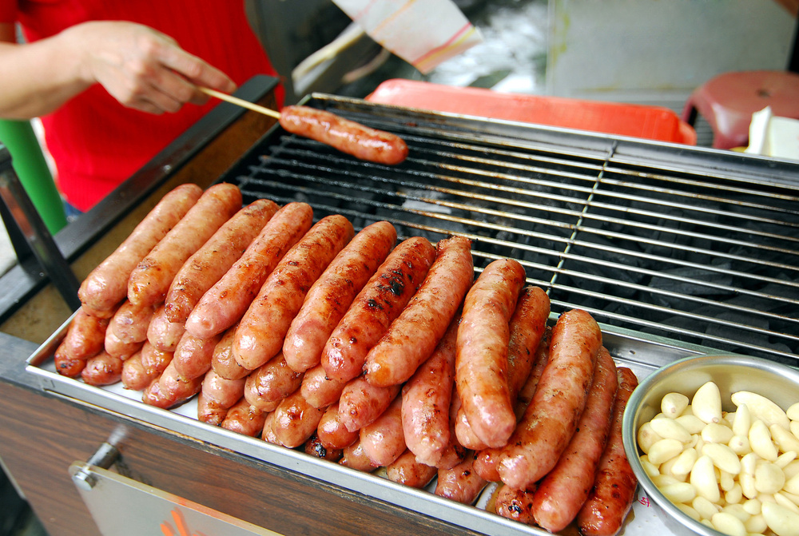
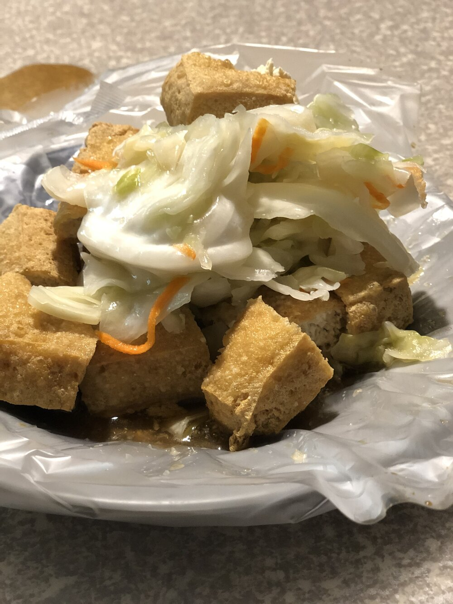
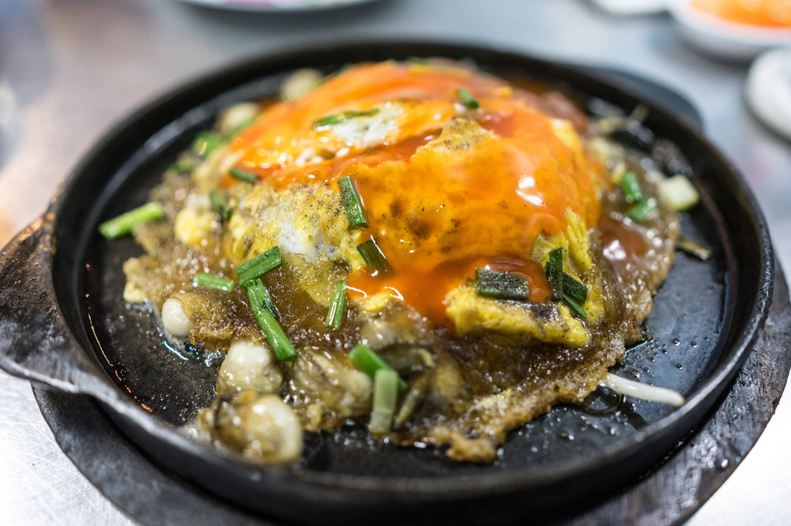
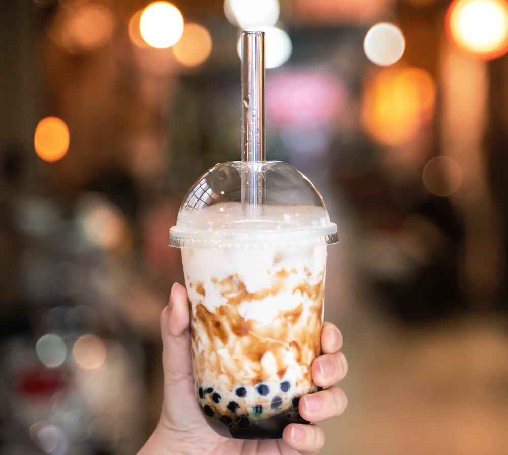
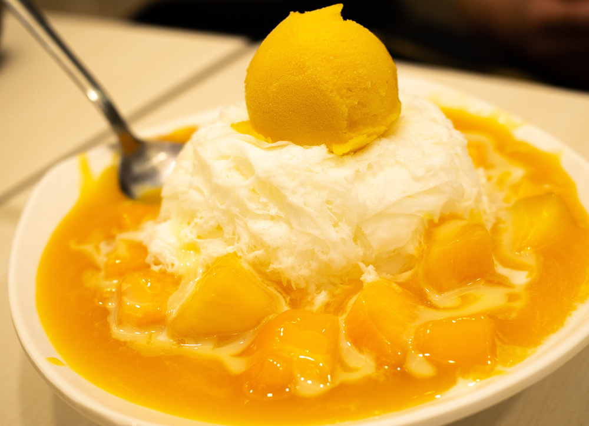

Taiwan Sausage
The first food item I'd recommend is Taiwanese sausages. They're made from pork and have a unique blend of savory and sweet, usually served with a clove of garlic.
Stinky Tofu
The next food I'd suggest is Taiwan's stinky tofu, which is usually served fried and with a generous helping of pickled cabbage. The smell, although unpleasant to some, comes with a unique taste many Taiwanese crave.
Oyster Omelets
Next is their famous oyster omelets, which are, as you might have guessed, made with oysters, eggs, and a unique sauce similar to ketchup.
Boba Milk
Another popular Taiwanese food that is making its way around the world is brown sugar boba drinks. These drinks can be found just about anywhere where there is a large population of Chinese-speaking people and has become popular with western cultures as well.
Shaved Snow
Taiwan is also known for its shaved snow desserts, which are frozen cream topped with fresh fruits and sweetened condensed milk. The perfect treat for Taiwan's hot summer days.